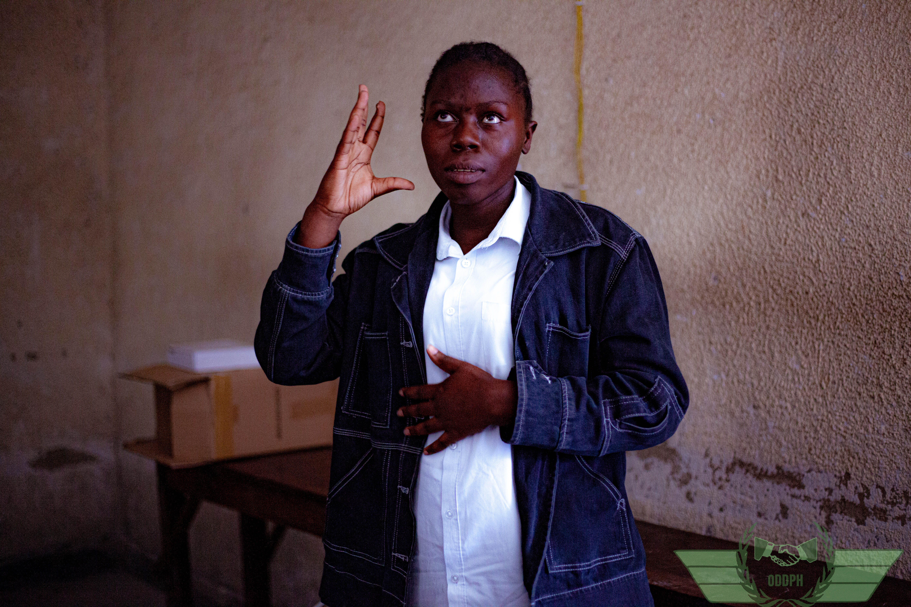
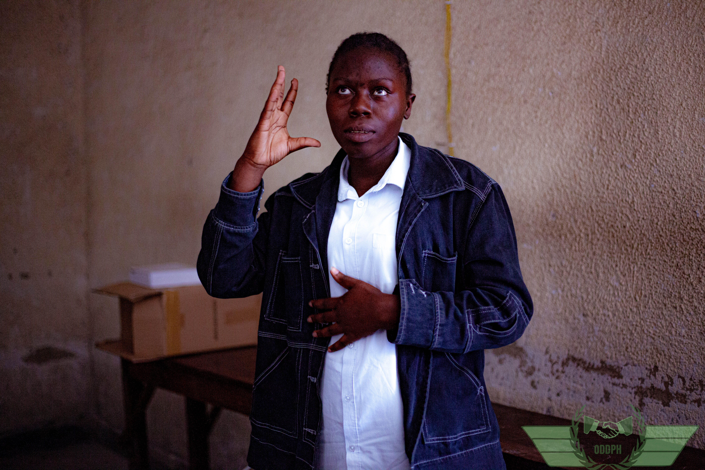

Droits des personnes handicapées : état des lieux
Dans cet article, je discute des défis actuels auxquels font face les personnes handicapées dans une situation des conflis armés

Je suis Monique Kabanza, ingénieure agronome spécialisée en appareillage orthopédique. Je travaille pour la défense des droits des personnes handicapées et je suis passionnée par l'inclusion sociale.
Dans cet article, je discute des défis actuels auxquels font face les personnes handicapées dans une situation des conflis armés
Exploration des implications de cette loi pour la protection et la promotions des droits des personnes handicapées en RDC
Partage de mes expériences et réflexions sur le travail dans le domaine des droits humains en général et en particulier les droits des personnes handicapées
Pour toute demande d'information, n'hésitez pas à me moniquesebi@gmail.com.
Téléphone : +243 82 258 1869

 
